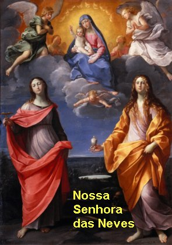

ORAÇÃO A
NOSSA SENHORA DAS NEVES
Ó MARIA SANTÍSSIMA, MÃE DE DEUS e nossa Mãe, por aquela sublime lição que nos destes, conservando a Vossa Alma mais cândida que a mais pura neve, desde o feliz momento de Vossa Conceição Imaculada, querendo edificar em nosso coração um templo místico consagrado ao Vosso tão querido culto, Vos pedimos, ó grande VIRGEM MARIA, que nos conceda de DEUS, a graça sublime de bem cuidar de nossa perfeição interior e principalmente de conservar ilibada a santa virtude da pureza.
Ó excelsa VIRGEM DAS NEVES, protegei o Brasil, que é Vosso desde o dia abençoado do descobrimento, durante a colonização, no império e na república, e vosso será em todos os tempos, porque assim desejam os vossos filhos que Vos ama com ternura e afeição, e desejam viver à sombra augusta da Cruz, sob a Vossa maternal e acolhedora proteção. Assim seja.
Abençoe-nos o DEUS Todo Poderoso, o PAI, o FILHO e o ESPÍRITO SANTO.
T. Amém

"NOTICIAS DO APOSTOLADO"
Convidamos-lhe a visitar o "PORTAL DO APOSTOLADO", endereço abaixo. Nele encontrará Sites sobre as Aparições de Nossa Senhora; a Vida e Obra de Jesus de Nazaré; um profundo e autêntico conhecimento sobre o Criador; o Divino Espírito Santo; Vida e Obra de diversos Santos; Exercícios Espirituais; Via Sacra; a Reza do Terço; Anjos do Senhor; e muito mais. Todos os Sites foram elaborados com muita dedicação e sobretudo, fundamentados na Sagrada Escritura, na Tradição Cristã, nas Manifestações Sobrenaturais e na Vida e Obras de diversos Santos, com o objetivo de informar somente a verdade.
http://www.apostoladosagradoscoracoes.com/

Apresentamos as principais organizações que ajudam na divulgação deste Site:


Para comunicar-se conosco, por favor clicar na imagem abaixo: